8 Network Analysis
Calculate emprical regularized correlation, biochemical relationships and structural similarity networks. Each module supports rich static, interactive and dynamic network visualizations.
Translate
Translate between > 200 bichemical identifiers.
Calculate
Select translation options. The identifier selects the column in the col_meta to translate. Use from and to to specify the identify of the selected identifier and what new identifier it should be translated to.
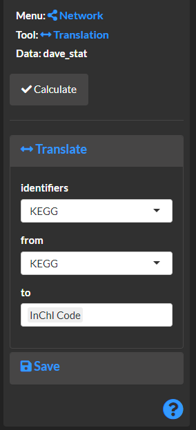
View translation results.
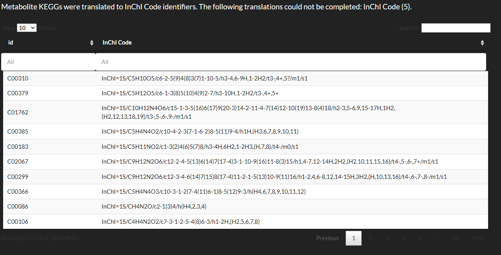
Mapping
Combine and create variable mappings to add to network visualization node and edge properties.
Calculate
Map the log base 2 transformed fold-change to its absolute value and sign. This is useful to normalize increases and decreases and encode their magnitude and direction of change using separate asthetics.
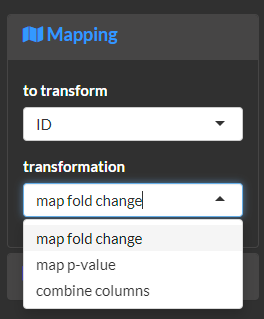
Map the significance of a p-value to a binary (e.g. true or false) outcome. This is useful to separate asthetics for significant and non-significant fold-changes. The following examples would evaluate if the p-value is less than or equal to 0.05.
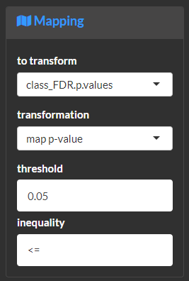
Combine mapped variables. This is useful to fine-tune asthetics based on custom combinations of mappings.
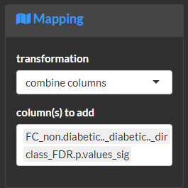
View the results of the mapping process. Note you first need to save the results from fold-change and p-values prior to using them with the combine transformation.
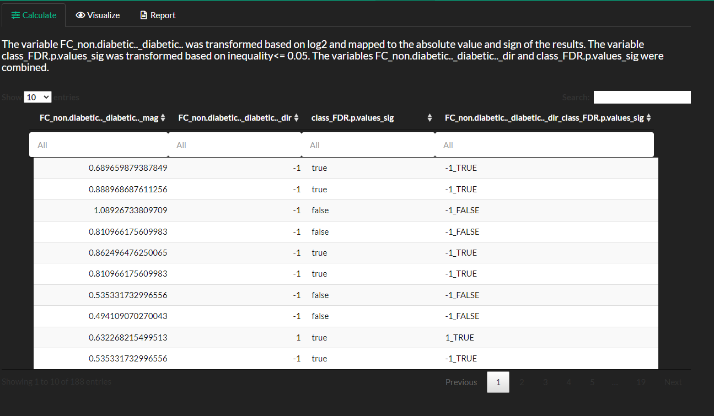
Correlation
This module is used to create and regularized correlation networks Jiang et al. (2019).
Calculate
Select correlation type and if p-values should be False discovery rate Benjamini and Hochberg (1995) corrected.
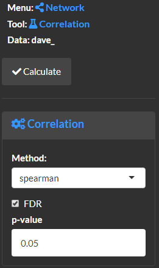
Select regularizationm method based on rotation information criterion (ric), stability approach to regularization selection (stars) or extended Bayesian information criterion (ebic) Jiang et al. (2019). Note you can also manually select the regularization lambda (higher lambda is more strict), but this needs to be done after a model is calculated. If no edges are returned using manual then try a lowe or less stict regularization.
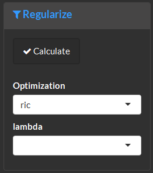
View methods and summary for the calculated network.
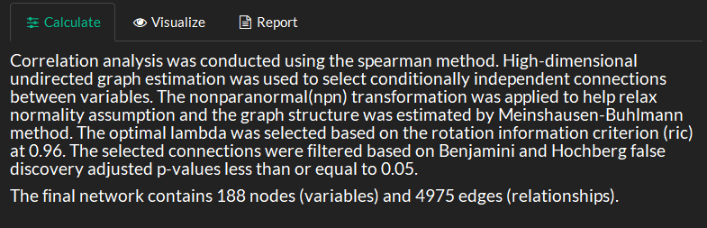
Biochemical
This module is used to calculate and biochemcial networks. Metabolomic precursor to product relationships are based on KEGG identifiers.
Calculate
Select KEGG identifier column name in the data.

View methods and summary for the calculated network.
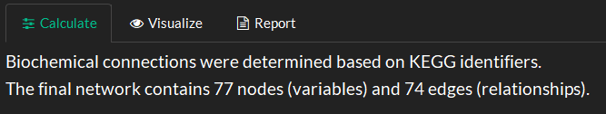
Structural
This module is used to calculate and structural simialrity networks. Metabolite structural similarities are calculated based on overlap in Pubchem structural fingerprints defined by compound identifiers or CID
Calculate
Select Pubchem CID identifier column name in the data.
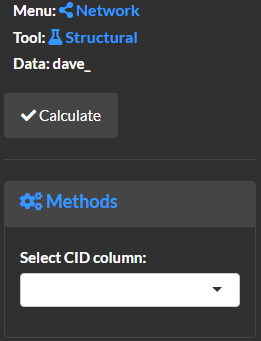
View methods and summary for the calculated network.
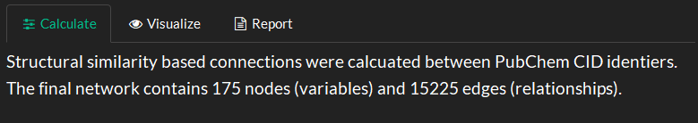
Enrich
This module is used to combine and visualize networks.
Calculate
Select networks to combine and visualize. Use single edges to remove duplicate edges from the combined edge lists.
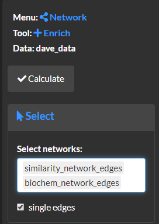
Update network node attributes based on another compatible data set.
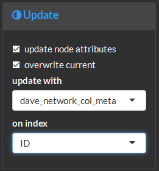
View methods and summary for the calculated network.

Visualize
Visualize the created networks. Note the same visualization options are also available for the correlation, biochemical and structural modules.
Visualize and modify network node attributes.
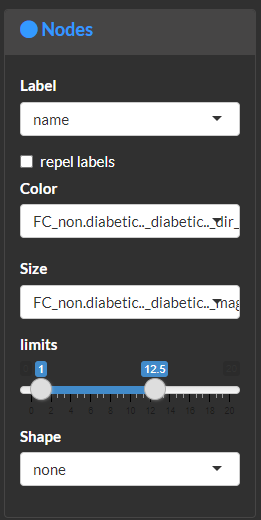
Modify and filter edges or relationships. Use this module to filter edges based on structural similarity (e.g. >0.8) or correlation strength.
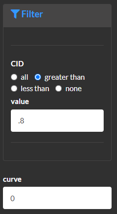
Customize network global properties.
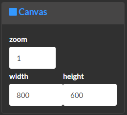
Create static plots which will be featured in the report.
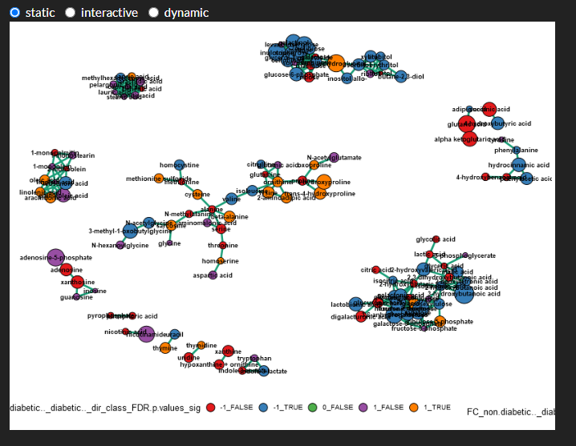
Create interactive plots which allow pan zoom, on hover annotations and control of which nodes and edges are shown.
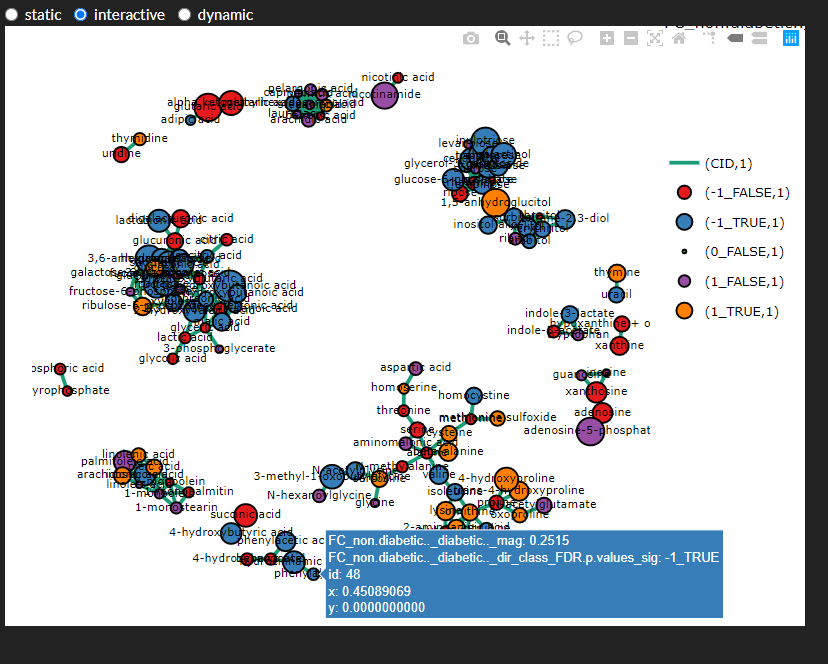
Create dynamic plots which highlight node connections, on hover annotations, moving nodes and look up of nodes of interest.
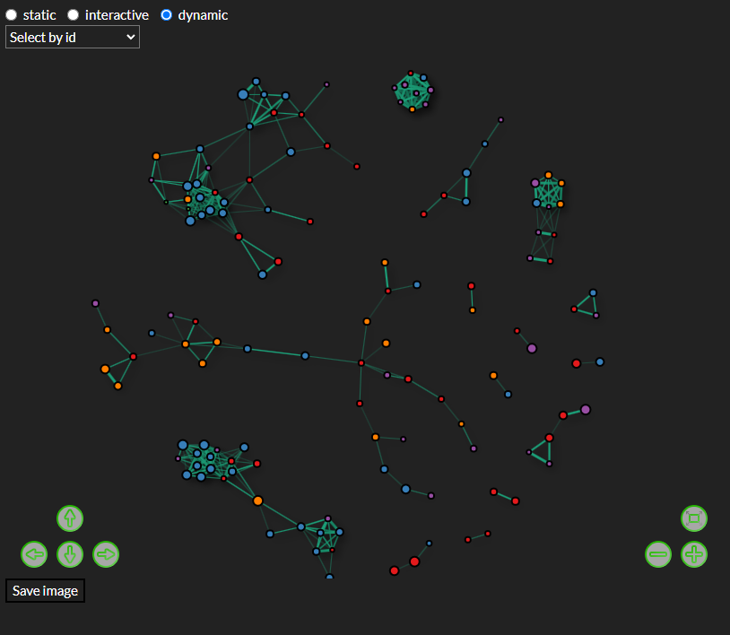